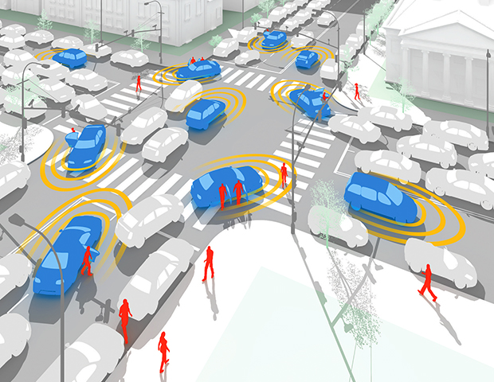

Human Interaction
New technology ushers in new, unintended consequences. When cell phones were invented, the inventors never thought that they would keep students from paying attention in class, or preventing families from listening to each other at the dinner table. The inventors of the internet never would have guessed what kind of communities they would create. In a similar fashion, self-driving cars will have unintended consequences.
Humans Ruin Self-Driving Cars
The first problem is the way humans act when interacting with the roadways. A pedestrian may choose to jaywalk in the middle of the day in a city since cars are driving slowly. Sure, it’s rude, but it happens. In the same way, if a driver sees someone about to jaywalk, they may pretend to not see the pedestrian hinting at crossing, since the driver has right-of-way anyways. How would a self-driving car act in these situations? Would it be aggressive and scare the pedestrian off the road, or would they let pedestrians walk in the middle of the road and stop and wait? If it’s the earlier option, then there could be accidents with frequent jaywalkers who anticipate that cars will stop. If it’s the latter, more jaywalkers will take advantage of the fact that self-driving cars will stop, and use them as an opportunity to block the road. The inner-workings of this scenario also depend on the place. For example, in a neighborhood, kids expect cars to always stop, whereas on a highway, no one expects cars to stop. If the car was to stop for all pedestrians, the human drivers behind it may get angry and resort to road rage. Driverless cars are a nuisance to human-driven ones.
Similar scenarios with pedestrians are also common, such as bikers expecting cars to pass them or walkers trying to avoid a puddle on the sidewalk by stepping onto the road for a moment. These pedestrians are expecting the cars to pass, but in a respectful manner. All of these scenarios with pedestrians show that there is a huge amount of work that has to go into self-driving car algorithms. This work may make self-driving cars too expensive to develop for most automakers, who have no problem making revenue producing normal cars currently.
Furthermore, pedestrians and other drivers have interactions with drivers inside a car. For example, at a four-way stop, if two cars arrive at the same time, the drivers will motion to each other to determine who goes first. How will an autonomous vehicle signal that another car should go if there is no driver in the car to do so? Also, how will an autonomous vehicle react to signals from pedestrians and other drivers? The point is that there are many scenarios to consider, and they may require different responses from area to area.
There is also a flip side to clueless autonomous cars, and that is the owners of these cars taking advantage of them. Owners in cities could, for instance, let their car drive around the block over and over while they themselves get groceries from a corner Walgreens. This would allow them to avoid having to pay for parking for the ten minutes they are inside, and it’s convenient because they can be picked up and dropped off right at the door. This scenario is extremely inconvenient for drivers on the road following the autonomous car, which is contributing to traffic and continually taking up the right hand turn lanes as it circles. There are many examples of similar scenarios, such as sending an autonomous car to fill a parking spot for the day and then sending it home as soon as the owner arrives in a different car to claim the spot.
During the first years of the transition to driverless cars, there may even be an increase in alcohol consumption, since self-driving car owners will be able to drink and let their car drive them home for free, rather than having to use ride-sharing.
Conclusion
There are many different scenarios because of the way humans are that cannot be determined correctly by machine learning algorithms for self-driving cars. There are many nuances to human driving that would make self-driving cars a nuisance. Owners of self-driving vehicles will also be able to take advantage of them at the harm to other drivers. As of right now, there is no technology in place to replace the necessity of human drivers to make nuanced decisions, and this will keep autonomous vehicles from penetrating a market dominated by human drivers successfully. From a deontological point of view, self-driving cars could be viewed as a negative, as they would only serve their owners. But from a utilitarian perspective, where all drivers own self-driving cars and pedestrians become accustomed to autonomous vehicles, self-driving cars would increase safety and therefore be positive.